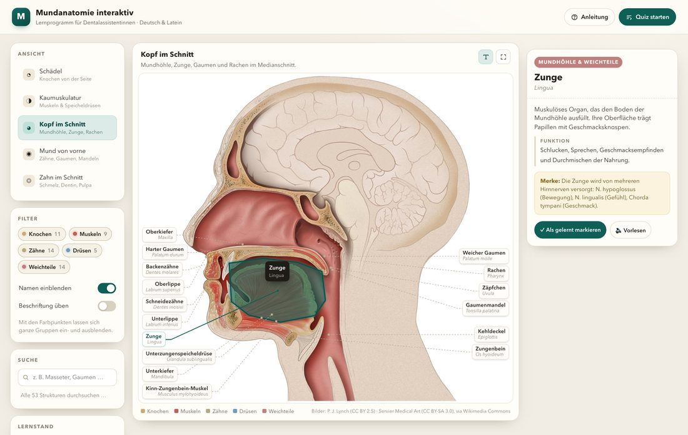
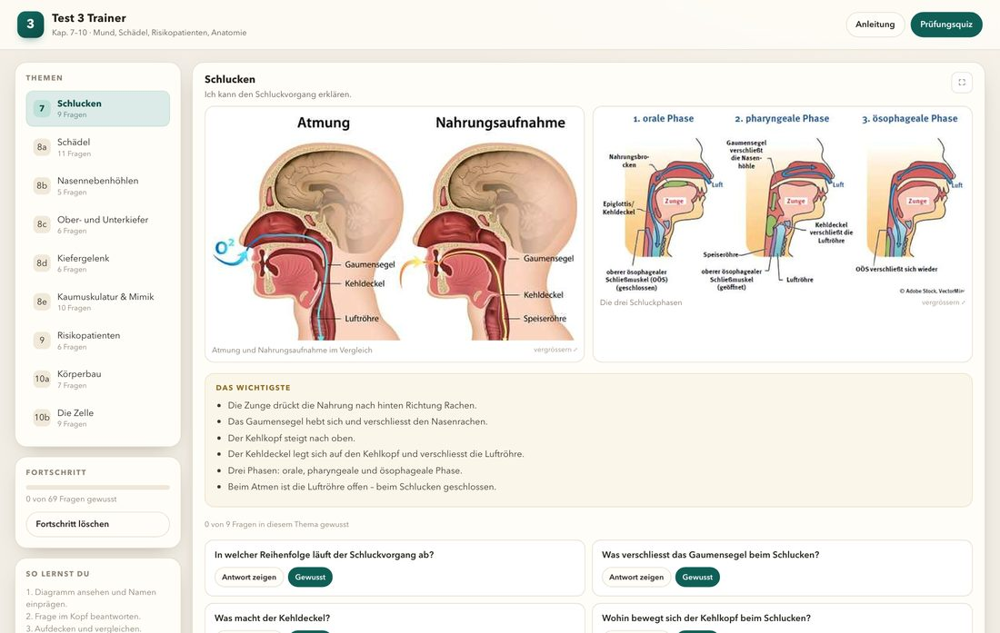

Anatomie
Mundanatomie interaktiv
Knochen, Muskeln, Zähne, Speicheldrüsen und Mundhöhle: Strukturen anklicken, filtern, Namen ein- und ausblenden und im Quiz prüfen. Fünf Ansichten, 53 Strukturen.
Zwei interaktive Lernprogramme – direkt im Browser nutzbar oder als einzelne Datei zum Mitnehmen. Kein Login, keine Installation.

Knochen, Muskeln, Zähne, Speicheldrüsen und Mundhöhle: Strukturen anklicken, filtern, Namen ein- und ausblenden und im Quiz prüfen. Fünf Ansichten, 53 Strukturen.

Schlucken, Schädel, Nasennebenhöhlen, Kiefer, Kiefergelenk, Muskeln, Risikopatienten, Körperbau und Zelle – mit den Abbildungen aus dem Test und 69 leichten Fragen.